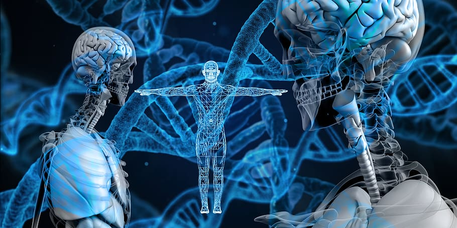

About Me
Life:I am a high school student interested in math, drama, and computer science. Although this is my first time taking a computer science/any tech course, I am hoping to learn as much as possible from my peers and teachers.

Interests: Some of my interests include painting, cooking, baking, knitting, watching movies. I like anything that involves creating, or helps me expands my knownledge. I have been cooking and baking ever since I was a child. I enjoy making many types of food including, Indian, Chinese, Italian, Greek, and American food. Painting and knitting are some of the activites that help me calm down when I'm stressed, it's a way to release my emotions. I love watching movies/tv shows although I get overly attached to the characters, and cry when the movie/show ends. :(
Future Career: At first, I didn't know what I wanted to do as a career. Now that I have had more experiences, some career paths I am interested in are Forensic Science/Biology and Psychology. As I go through my Computer Science course, I have found a great interest in it. I'm thinking of potenially going into Computer Science as it is pretty exciting to work with codes/programs, but also because not many women go into Computer Science. There aren't a lot of women in Computer Science due to the sexism in the workplace, lack of rolemodels, feeling looked over, etc. I hope if I do go into Computer Science that I will be able to inspire many young women who want to go into this field, but feel hesitant to do so.
